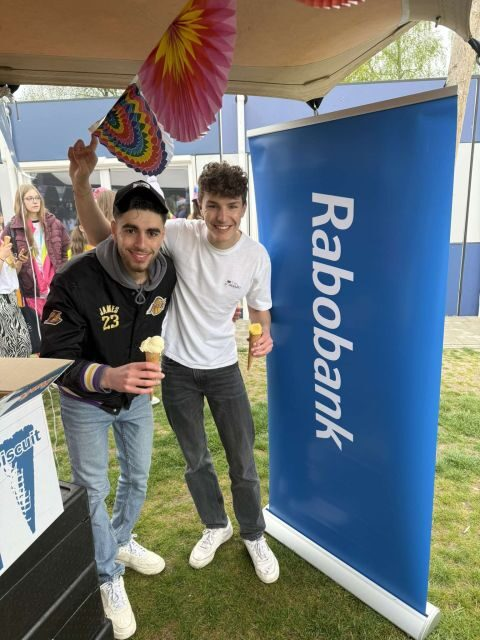

05
Fun stuff

An evening at Optiver in Amsterdam on how AI is used across trading, research and technology. Came home with a few ideas for my own market-making project after talking to people from trading, quant research and tech.
Post on LinkedIn ↗
My first project as a new member of Rabobank's Members' Council, and my last for Bonhoeffer College: an ice cream stand sponsored by Rabobank plus a photobooth for the school's stuntdag.
Post on LinkedIn ↗